القبة
بلاطات القبة المقسمة تصير علامة لما يهم الآن: الحدث المفصلي في التسلسل، والعاجل، والقسم الأساسي. وملف القبة يصير إطار الصورة الرئيسية في الأولى.
تحليل الهوية، والاتجاه البصري، وأسس التصميم والمكونات، وسجل مراجعة الإطلاق. كل ما هنا مبني بالكود نفسه الذي يبني الصفحات.
مجلد «ثيم العاصمة» يحوي ملفين بطبقات فوتوشوب: منشور «أعداد المقتحمين»، وقالب «الأسير». فككناهما طبقة طبقة، واستخرجنا منهما كل ما يمكن أن يصير نظاما.
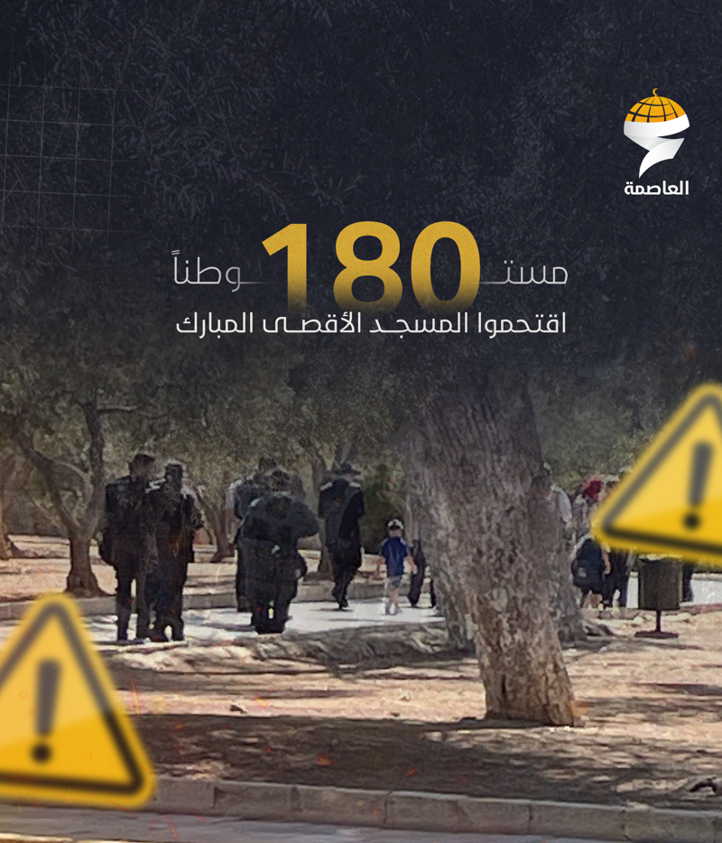
#F0A808 إلى #E8930F، أبيض فضي للشريط، وفحمي #202030 لأرضية الصور.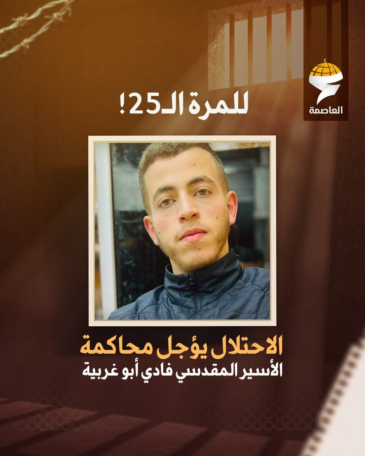
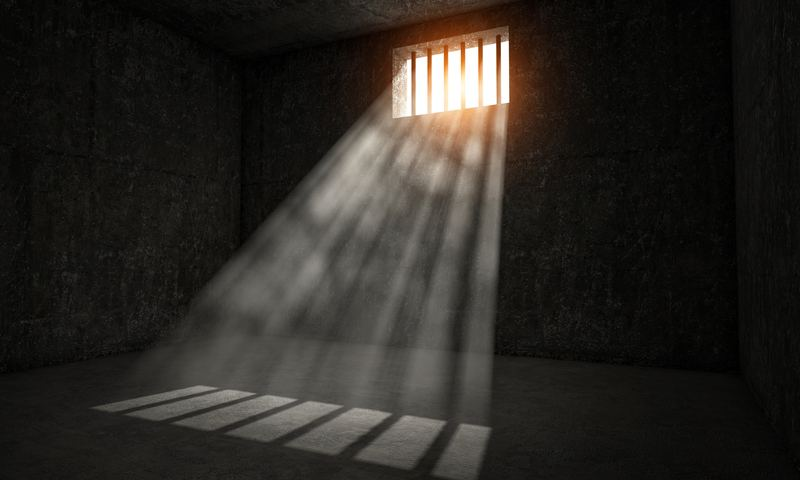
#FFB85D، والاسم بالأبيض، بخط Boutros News العريض.النسخة المعروضة هي يوم الخميس 9 أكتوبر 2025، ثالث أيام «العرش»، كما غطته قناة العاصمة على تليجرام: العناوين والأرقام والتوقيتات والصور منشورات حقيقية من ذلك اليوم، ومقالات الرأي وبعض الملفات المفتوحة توضيحية. وهنا كل صورة وطبقة في ملفي الهوية، وأين تعيش الآن في الموقع. الخطان التجاريان في الملفين لا ينشران على الويب بلا ترخيص: Noor في منشور المقتحمين، وBoutros News في قالب الأسير. حل محلهما Markazi Text للعناوين وNoto Kufi Arabic للواجهة والأرقام.
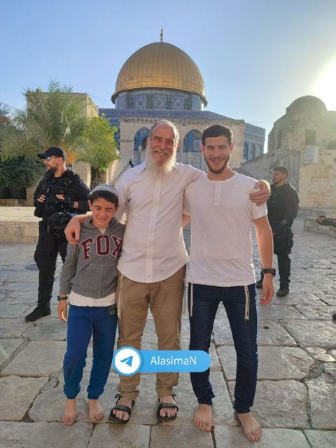
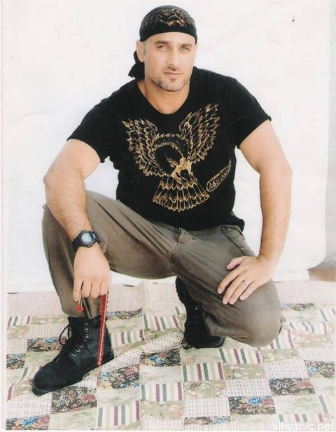
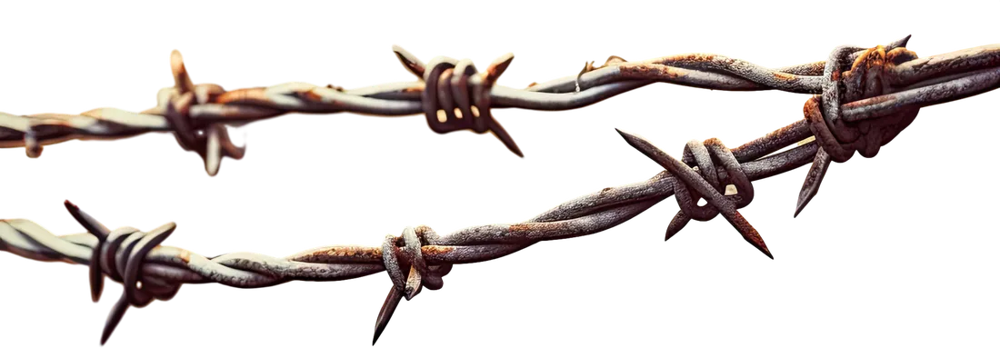
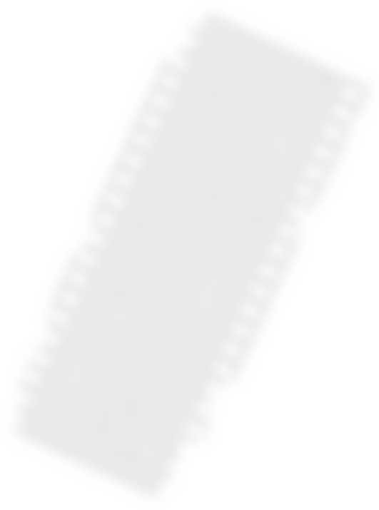
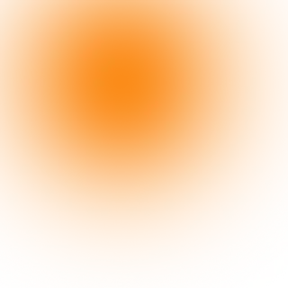
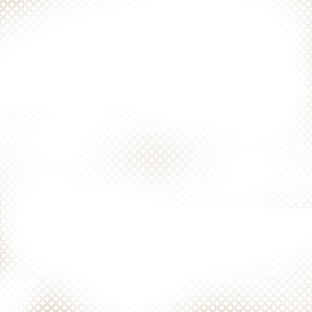
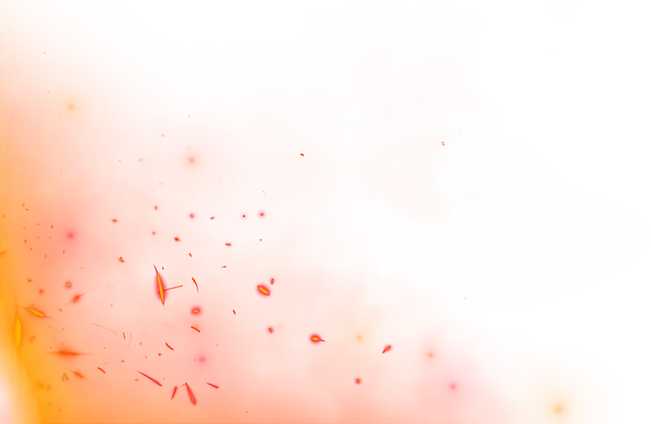
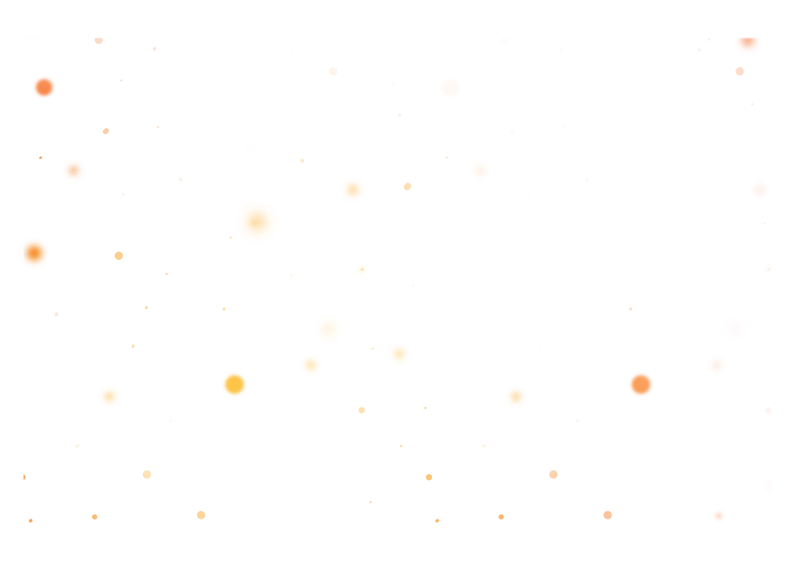
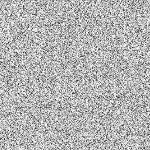

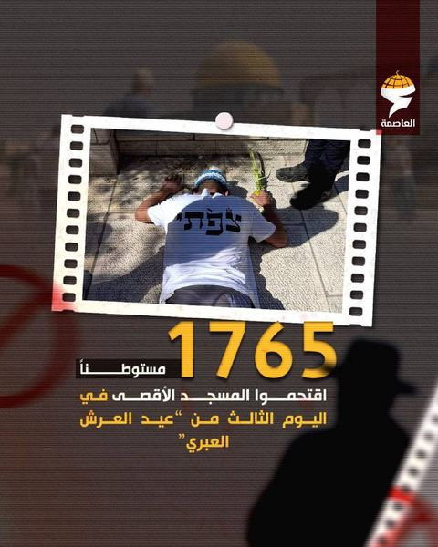
طبقات بلا محتوى بصري لم ننقلها: خلفيتان بيضاوان، وظل الورقة الذي صار ظلا بالكود، وطبقة ضبط الألوان التي صارت مرشحا على صورة الزنزانة.
لا نكرر الشعار. نستعير منه ثلاثة أشكال، ونعطي كل شكل وظيفة تحريرية واحدة.
بلاطات القبة المقسمة تصير علامة لما يهم الآن: الحدث المفصلي في التسلسل، والعاجل، والقسم الأساسي. وملف القبة يصير إطار الصورة الرئيسية في الأولى.
الشريط الذي يلف القبة يصير شريط آخر التحديثات الذي يلف صورة الخبر الرئيسي، وطرفه ينطوي ويستدق مثل ذيل العين. ويتكرر الانطواء في زاوية صور التقارير.
مستــ180ــوطنا
الكشيدة من منشورات العاصمة: الرقم يسكن داخل الكلمة. نستخدمها للرقم الذي يلخص اليوم، ولأرقام الشهر في مدار القدس، ولا نستخدمها للزينة.
صحيفة مطبوعة، لا شاشة ليلية. صفحة بيضاء، وحبر أسود محايد، وأقسام متبادلة برمادي بارد، وأعمدة تفصلها خطوط شعرية، وقاعدة مزدوجة تحت الترويسة. لا كتل سوداء إلا الصور والفيديو.
الأحمر للإشارة، والذهبي للقبة. الأحمر من بطاقات «عاجل» في منشورات العاصمة نفسها: العاجل، والمباشر، والحدث المفصلي، والزر الأساسي. والذهبي لا يظهر إلا في الشعار وعلامات القبة وخطوط طولها والأرقام. أي استخدام آخر يضعف الإشارتين.
المكان والساعة قبل التصنيف. كل خبر يحمل مكانه ووقته تحت العنوان، والإحداثيات تكتب بالعربية: ش للشمال، ق للشرق.
مربع بالقانون، والمنحنى للقبة وحدها. لا زوايا مدورة. المنحنيات الوحيدة في النظام هي القبة والقوس، ولذلك تلفت النظر حين تظهر.
العربية أولا. العين تبدأ من اليمين: العنوان في البداية، والصورة تتبعه، والوقت يقرأ قبل الخبر في الشريط والتسلسل.
قيم الرموز الحالية في assets/css/asima.css. الصفحات والغرفة التحريرية تقرأ من الملف نفسه.
--bg #FAFAFBأرضية الطبعة--bg-2 #F0F2F4الأقسام المتبادلة--sheet #FFFFFFالأسطح المرتفعة--ink #121417النص والقواعد المزدوجة--accent #A1383Bالعاجل والمباشر والحدث المفصلي--dome #F0A808الشعار والقبة والأرقام على الصور--dome-ink #8A5B00الرقم الكبير على الورق--silver #8E97A3عمل الآلة في غرفة التحريرعرضdisplay · 34–60px · 1.321765 مستوطنا يقتحمون الأقصىعنوان 1h1 · 31–44px · 1.34مدار القدسعنوان 2h2 · 26–34px · 1.4تقارير وتحقيقاتعنوان 3h3 · 22–27px · 1.45لماذا يختار الاحتلال موسم الأعياد؟عنوان 4h4 · 20–23px · 1.5حشد مستوطنين عند باب القطانينمقدمةlead · 19–22px · 1.7اقتحامات على فترتين من باب المغاربة بحماية مشددة.نص القراءةbody · Markazi · 20–23px · 1.85بدأت الاقتحامات عند السابعة والنصف صباحا من باب المغاربة، وهو الباب الوحيد الذي تسيطر عليه شرطة الاحتلال بالكامل.تعليق الصورةcaption · Kufi · 14px · 1.8مستوطن يؤدي سجودا ملحميا قرب باب الرحمة حاملا قربانا نباتيا.بياناتmeta · Kufi · 13px · 1.6باب حطةشهاداتMarkazi Text للعناوين ونص القراءة: نسخ صحفي بقوام حبر المطبعة، يحمل العنوان الكبير ويريح في الفقرة الطويلة. و Noto Kufi Arabic للواجهة والبيانات والأوقات: كوفي هندسي قريب من كلمة الشعار، بأرقام جدولية. لا تباعد حروف على العربية، ولا تشكيل مضاف، ولا ارتفاع سطر أقل من 1.3 للعناوين و1.4 لأي نص عربي يلتف.
أساس 4 بكسل. إيقاعان للأقسام: --sec من 56 إلى 96، و --sec-tight من 36 إلى 60. الحاوية 1360 بكسل باثني عشر عمودا. التقسيم المزدوج 5 إلى 7 يتكرر في الأولى ومدار القدس والأصوات، لأن العمود الأيمن يقرأ أولا.
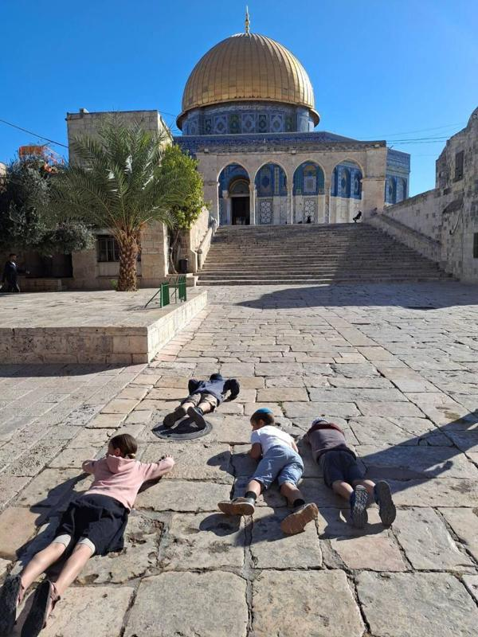
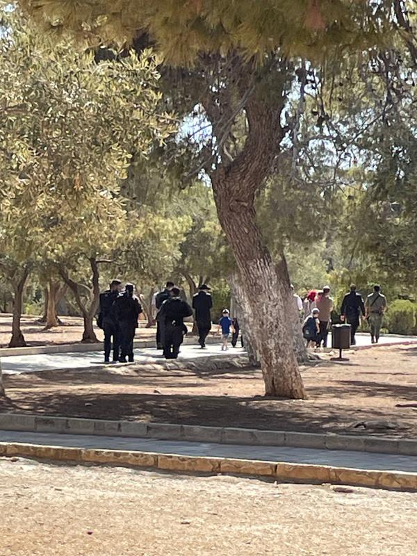
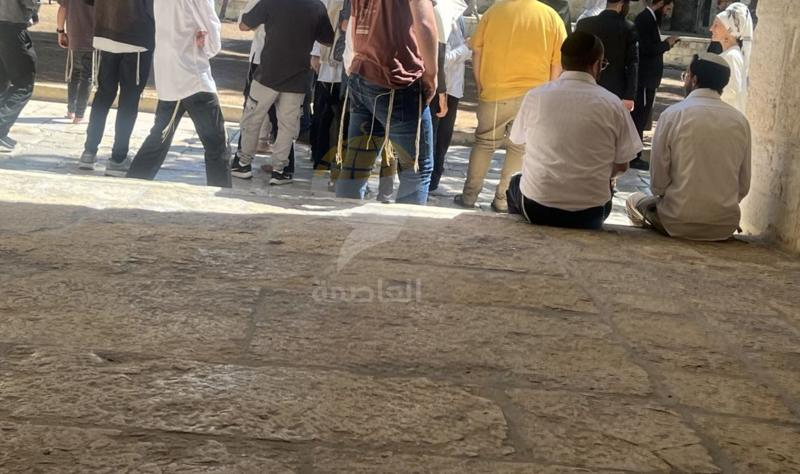
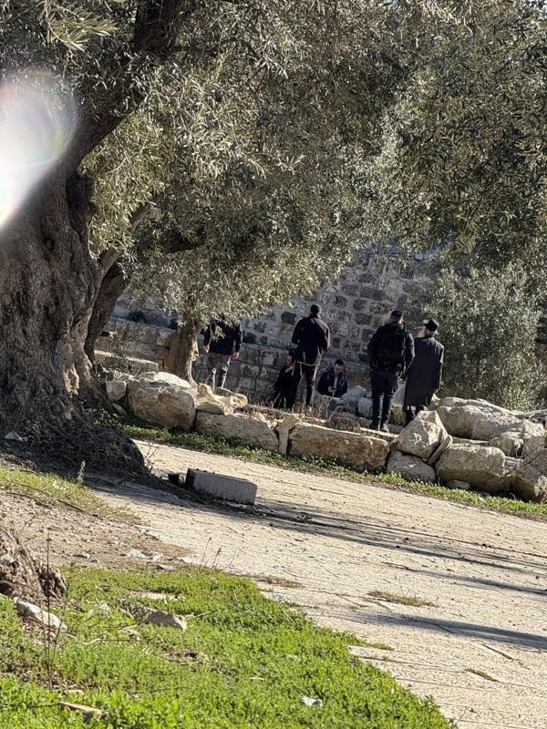
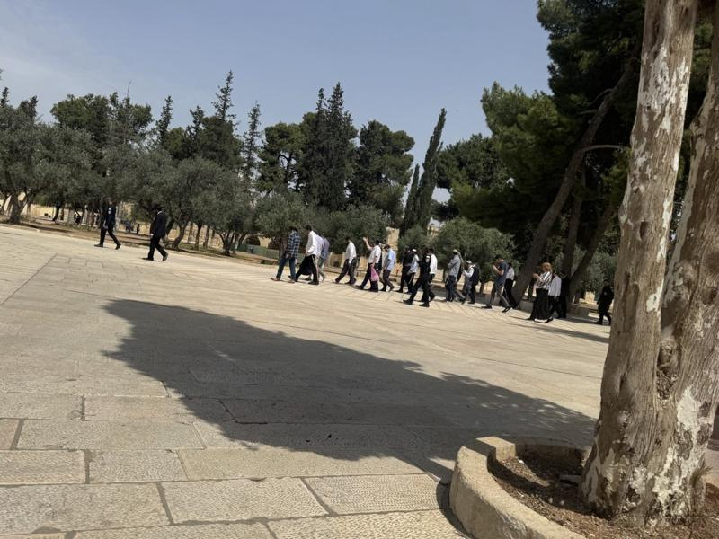
تشبع منخفض قليلا وتباين أعلى قليلا، كما في منشورات العاصمة. التدرج الداكن يوضع فقط حيث يجلس نص فوق الصورة، والحبيبات للصور الافتتاحية والعدسة. كل صورة تحمل المصور والساعة والمكان. ونقطة التركيز تحدد القص في كل المقاسات من مكتبة الوسائط.
الوصول إلى الأولى، مرة واحدة: القبة تنهض من أسفل، ثم ترسم خطوط طولها، والعنوان يطلع كلمة كلمة دون أن ينفصل حرف عن حرفه، والشريط ينفرد من اليمين حيث تبدأ القراءة، والكلمة الممدودة تتمدد أمام القارئ بينما يعد الرقم حتى 1765. كل ذلك في نحو ثانية ونصف، ولا يمنع النقر.
الحالة الحية: الشريط يستقبل التحديثات الجديدة فتدخل من اليمين وتفسح لها البقية مكانا. حلقة ذهبية تتنفس حول الأماكن التي يجري فيها شيء اليوم، والأوقات النسبية تتقدم وحدها كل دقيقة.
الظهور عند التمرير، مرة واحدة: الصور تنكشف من الأسفل، والقاعدة المستدقة ترسم نفسها من اليمين، والخريطة ترسم سورها قبل أن تضيء الأماكن، والأرقام تتمدد وتعد. ما يظهر في الشاشة عند الفتح لا يخفى أبدا.
التفاعل: صور العدسة تنفتح في عارض كامل تكبر فيه الصورة من مصغرتها، وتتنقل بالأسهم والسحب. تبديل المظهر ينتشر دائرة من الزر نفسه، والانتقال بين الصفحات يقلب الصفحة كورقة بينما يثبت الشريط العلوي. وفي الهاتف يتنحى الشريط العلوي أثناء القراءة نزولا ويعود عند الصعود.
غرفة التحرير: المساعد يكتب اقتراحاته كلمة كلمة أمام المحرر، ويمكن إيقافه في منتصف الجملة. قبول الاقتراح يومض في الفقرة، وتقدم المادة في مراحلها يتحرك على مسارها.
ما لا يتحرك عمدا: البحث، لأنه يفتح من لوحة المفاتيح عشرات المرات يوميا. والمنحنيات ثلاثة فقط: خروج قوي للدخول والاستجابة، ودخول وخروج للحركة عبر الشاشة، وخطي للحركة المستمرة. ومع تفضيل تقليل الحركة يتوقف كل ذلك وتبقى الصفحة كاملة.
نماذج حية من الملف نفسه. كل مكون يحمل شيئا من القبة أو الشريط أو المد، أو لا يحمل شيئا عن قصد.
.btn.field · .input.placeline · .metaالمسجد الأقصىخبر
.arch-ava · .bylineصورة الكاتب أو حروفه داخل قوس القبة، لا في دائرة ولا مربع.
.breaking · .prioمئات المستوطنين يحتشدون عند باب القطانين ويحاولون اقتحامه
الفترة الثانية من الاقتحامات تبدأ بعد الظهر
تحديثيظهر داخل التغطية المباشرة فقط.
.ledger · .rulerالحدث المفصلي يحمل القبة.
.pullنحن لا نطلب أكثر من الدخول إلى مسجدنا.
.toast · dialog.modal.tabs · .pager · .menu.empty · .dome-loader · .state-errهذا لا يعني أن شيئا لم يحدث. إذا كان لديك ما نتحقق منه، راسل غرفة الأخبار.
انقطع الاتصال 10:36. نعيد المحاولة كل 30 ثانية.
.sashالمساعد يقترح ويصوغ ويستخرج. المحرر يقرر. لا يملك المساعد زر النشر، ولا يكتب العاجل ولا الرأي.
في غرفة التحرير: كل فقرة تحمل خطا جانبيا يقول من كتبها. فضي منقط لما صاغه المساعد ولم يراجع، حبر متصل لما عدله محرر، ذهبي لما تحقق منه محرر. الخط معلومة وليس زينة، ولذلك لا يظهر إلا في المحرر.
للقارئ: كل مقال ينتهي بقسم «كيف أعد هذا الخبر» بالساعة والاسم: متى بدأت المسودة، ومن عدلها، ومن تحقق منها، ومتى نشرت وحدثت. والملخص الآلي يحمل علامة القبة المنقطة الفضية واسم من راجعه.
مراجعة نقدية للنسخة الأولى، بمراجع تصميم مستقل وفحص آلي، ثم ما تغير. الشدة: حرج، عال، متوسط، صقل.
الأرضية الفحمية والذهبي يصلحان لأي موقع إخباري، والأحمر الذي تستخدمه العاصمة نفسها في بطاقات «عاجل» لم يظهر في أي صفحة.
لغة «حبر وأحمر»: صفحة بيضاء وحبر محايد (بعد تجربة أرضية ورق جرائد بيج استبعدت)، وأحمر العاجل للإشارة، والذهبي للقبة والأرقام فقط. عناوين ونص بخط Markazi Text، والواجهة بالكوفي، وأعمدة بخطوط شعرية، والأولى تقرأ كصفحة أولى مطبوعة.
عنوان من خمسة أسطر بطول 355 بكسل، والصورة تبدأ تحت خط الطي بـ140 بكسل، وبجانبها فراغ 490 × 465 بكسل. أقوى أداة للعاصمة، الرقم الممدود، محشورة في صندوق جانبي وتكرر رقم العنوان.
تكوين «تحت القبة»: الصورة داخل ملف القبة بخطوط طولها، والرقم الممدود فوق الصورة كما في منشورات العاصمة، والعنوان قصير بلا تكرار للرقم، والشريط يلف أسفل الصورة بآخر التحديثات. عمودا النص والصورة يملآن الصف نفسه.
عنوان رئيسي بارتفاع 1.22، وتنوين «مستوطنا» يلمس السطر الذي فوقه. 279 علامة تشكيل مضافة في الملفات.
سلم أدوار بقيم ارتفاع لا تقل عن 1.42 للعناوين و2.0 لنص القراءة، وحذف كل التشكيل المضاف من كل الصفحات.
العنوان الرئيسي أكبر من عناوين الأقسام بـ1.17 مرة فقط، وشعار الخاتمة أكبر من العنوان الرئيسي.
عرض 30 إلى 53 بكسل، عنوان قسم 22 إلى 30، عنوان خبر 17 إلى 20، والخاتمة لا تتجاوز عنوان صفحة.
قاعدة أقوى تلون أسماء الأماكن بلون الدائرة، فيختفي «الأقصى» و«سلوان».
أسماء الأماكن بالحبر دائما، واللون للدوائر فقط. أسماء الأبواب بالعربية، وسور أقرب إلى خط السور الحقيقي.
مربعات للتصنيف والعنوان الصغير والتسلسل والفواصل والأحرف الأولى، لا علاقة لها بالشعار.
بلاطة القبة للحدث المفصلي والعاجل فقط، وقوس القبة للكتاب، وخطوط شعرية بدل الفواصل المربعة، والتصنيف كلمة بلا علامة.
حين يكون كل شيء ذهبيا لا يشير الذهبي إلى شيء.
لون واحد للعاجل والمباشر والحدث المفصلي، وهو الأحمر الآن، والذهبي للقبة والأرقام. زر القراءة في الواجهة صار ثانويا، وأعداد الشريط العلوي حذفت.
إحداثيات N/E، وJLM، وJerusalem، وأسماء أبواب إنجليزية، وأوقات بخط برمجي يفكك الكلمات العربية.
الوقت بأرقام الكوفي الجدولية، والإحداثيات بالعربية (ش، ق) في تعليقات الصور والخريطة فقط، وفي قمة القبة اسم المكان والساعة بدل الأرقام.
1,430 بكسل بلا صورة، والتحليل والملف المفتوح نص فقط.
قصة كبيرة بصورة، وقصتان بصور، والأكثر قراءة كقائمة مرتبة. الأحياء بصور مصغرة، والتقارير بغلاف مطوي الزاوية، والعدسة مسرح عريض وشريط صور بالساعة.
نفس لون الخلفية، فيضيع الإيقاع بين الطبعتين.
الأقسام المتبادلة تأخذ درجة مختلفة عن الأرضية في المظهر الداكن.
تباين 1.03:1 في المظهر الفاتح، وروابط المنهجية وسياسة الذكاء الاصطناعي ترجع 404.
رموز ألوان الخاتمة مكتملة، وهذه الصفحة صارت وجهة روابط المنهجية والذكاء الاصطناعي ونظام التصميم.
205 بكسل من الأشرطة قبل أي خبر، وبحث ومباشر مكرران في الأعلى وفي الشريط السفلي.
سطر التاريخ داخل الواجهة ومخفي في الهاتف، والبحث والمباشر في الشريط السفلي فقط، والعاجل سطران كحد أقصى.
35 هدفا، منها روابط «المزيد» بارتفاع 22 بكسل.
كل روابط النص الإجرائية بارتفاع لا يقل عن 44 بكسل.
«اقتحــــ» ثم «5,412» ثم «ـــام».
الشكل الممدود مخفي عن قارئ الشاشة، ومعه نص بديل كامل: «5,412 اقتحاما».
من h2 إلى h4 في التسلسل والخاتمة.
مستويات متتالية في كل الأقسام.
حلقة التركيز ذهبية على الشريط الذهبي، وسطر رابع ظاهر نصفه في العاجل المقصوص، وتنوين في موضعين مختلفين، وشرطات تحت الأكثر قراءة تشبه التسطير.
حلقة تركيز بالحبر على الأسطح الذهبية، والقص بلا تسرب، وحذف الشرطات، ومؤشر كتابة وتحديد وشريط تمرير بألوان النظام.
«منذ 3 د» و«منذ 1 س».
«منذ 3 دقائق»، «منذ ساعة»، «منذ ساعتين»، «منذ 11 دقيقة».
أخفينا الشعار واسم العاصمة من الأولى، وسألنا: ما الذي يبقى ويقول إنها العاصمة؟